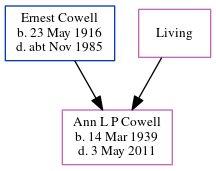

Ann L P Cowell 1939 - 2011
[ Home ] | [ Calendar ] | [ Surnames Index ] | [ Errors ] | [ Family History ]The child of Ernest Cowell (a transport driver) and Irene Marshall, Ann Cowell, the second cousin on the mother's side of Nigel Horne, was born in Thanet, Kent, England on 14 Mar 19391,2,3.
During her life, she was living at Shelley, Monkton Road, Minster in Thanet on 29 Sept 19394; and at 2 Lanthorne Court, Lanthorne Road, Broadstairs, Kent, England c. 2003.
She died on 3 May 2011 in Broadstairs1.
Parents
- Ernest James was born on 23 May 1916
- Irene M
Citations
- England & Wales Deaths 2007-2020 - Findmypast
- England & Wales births 1837-2006 - Findmypast
- England & Wales, Birth Index: 1916-2005 Online publication - Provo, UT, USA: The Generations Network, Inc., 2008.Original data - General Register Office. England and Wales Civil Registration Indexes. London, England: General Register Office. © Crown copyright. Published by permission of the Cont
- 1939 Register - Findmypast (was the daughter of the head of the household)
Notes
Disabled because her mother put her in scalding water in a bath.
Media
1939 Register Transcription - TNA-R39-1820-1820E-019-34
England & Wales births 1837-2006 - BMD/B/1939/2/AZ/000249/103
1939 Register - TNA/R39/1820/1820E/019/36
Family Tree
Map
Generated by ged2site. Last updated on Jul 3, 2024
Known Issues
Residence record for abt 2003 contains no citation